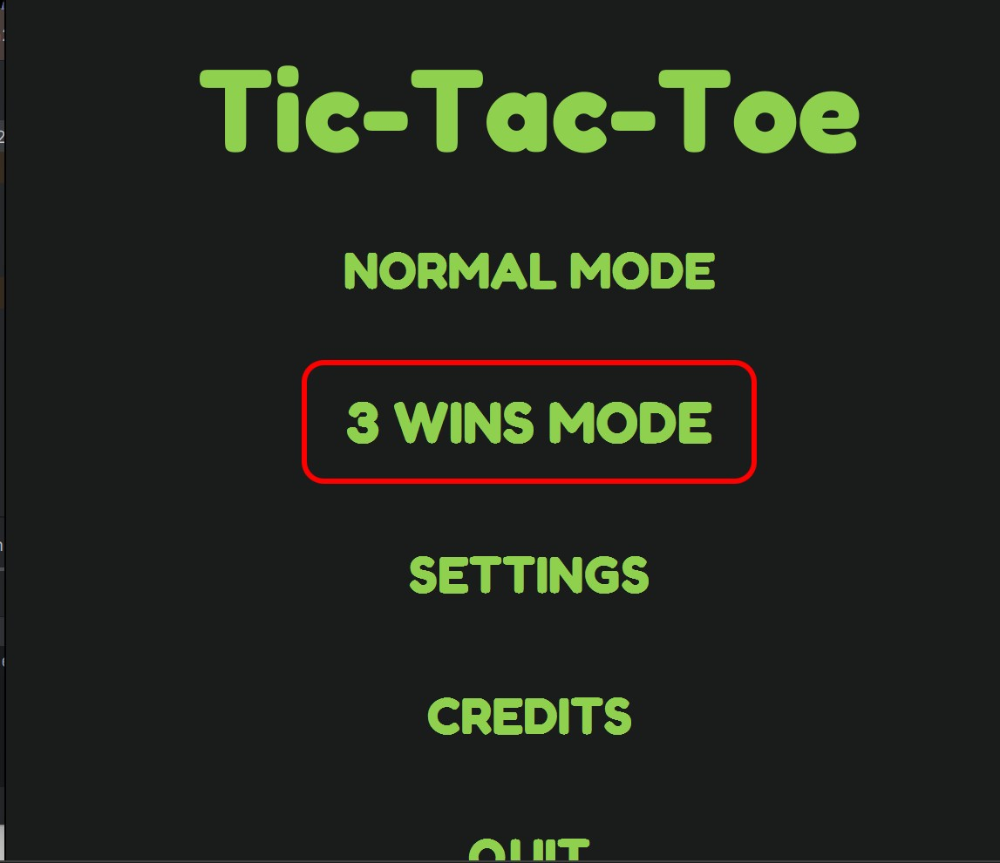

Java - Tic Tac Toe
This was a final group project for my Java course where we developed a Tic Tac Toe game. My contributions included adding different game modes, implementing score tracking, and making sure the game reset properly after each round. This project helped strengthen my Java programming skills, teamwork, and problem-solving in a collaborative environment.
Tools used: Java, IntelliJ IDEA, Discord